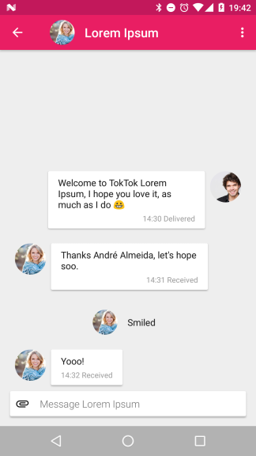

We are a focused effort to bring high quality privacy enhancing software to everybody.

Current focus
Focus means we work on a small set of projects (one or two at a time) and concentrate all our work on getting those projects finished completely before moving on to the next target.
Our current focus is:
- Create a full specification of the Tox protocol.
- Create a free executable model of that protocol.
- Slowly improve the existing Tox protocol implementation written in C. We build new releases with mostly cleanups, minor bugfixes, and small non-intrusive features.
A new implementation in Rust is in progress. It evolves together with the model and is tested against the specification.
Neither the Tox protocol nor the implementation have undergone peer review, and its exact security properties and network behaviour are not well-understood, yet. We are actively working on improving that situation. Until said peer review, Tox is not recommended for use cases that require proven, high-assurance security. If you find any potential security issues, don’t hesitate to report them on the bug tracker.
Contributing
Check out our roadmap and changelog. If you want to help, you could start by reviewing pull requests. You can view the list of repositories and their build status. If one of them has low coverage, you could familiarise yourself with the code by writing some tests.
Contact us
If you’re interested in what we’re doing, feel free to stop by on IRC in #toktok on Freenode. Feel free to stick around and discuss TokTok related topics. If you do join, please stay on topic and respect other people.